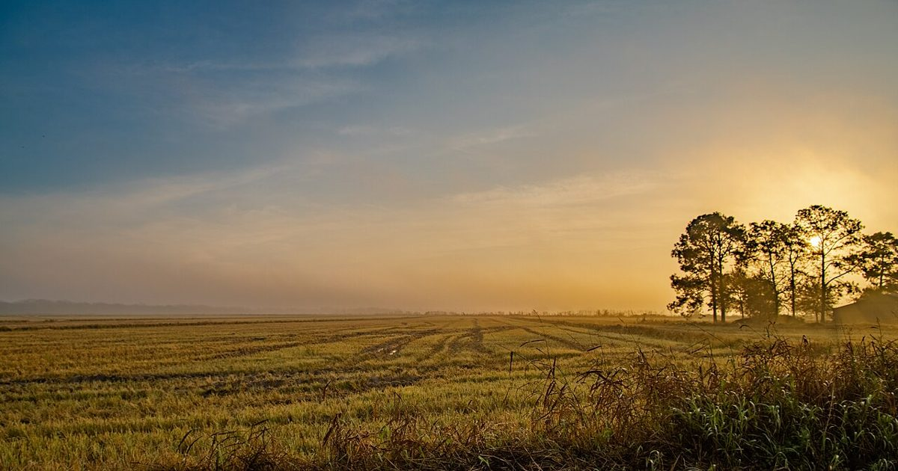
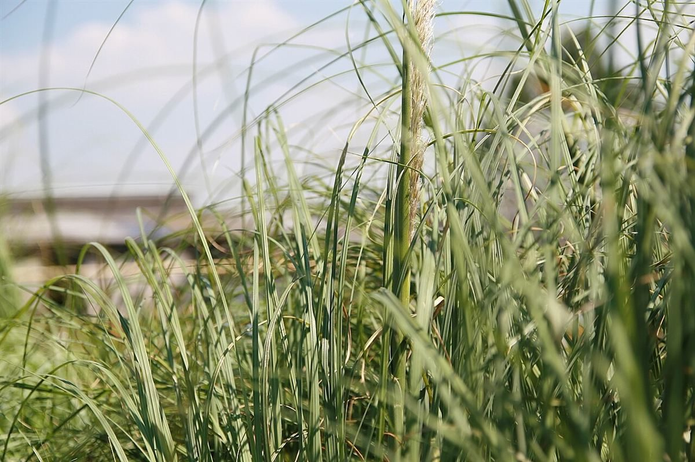
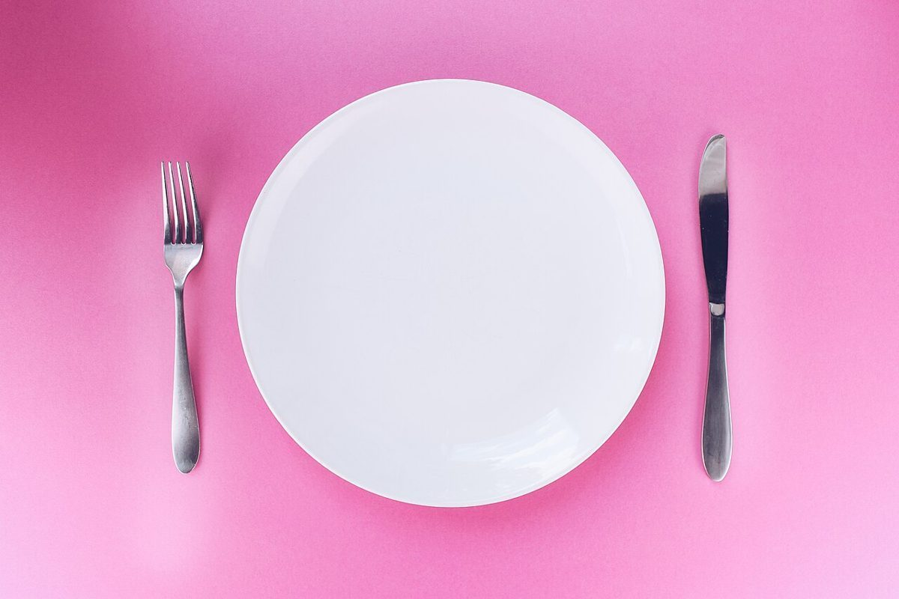

のざわふぁーむ

制作側の連想
七文字、六拍。小さな「ぁ」だけ拍がない。
屋号「のざわふぁーむ」は、書くと7文字ですが、読むと「の・ざ・わ・ふぁ・ー・む」の6拍です。小さな「ぁ」は拍を増やしません。制作側はこの数え方の違いが面白いと思い、このサイト全体を「文字帖」の形にしました。お店の理念・由来とは無関係の、制作側の連想です。
「ふぁーむ」の語は英語の farm を思わせますが、農園・収穫物・メニュー・体験の有無は分かりません。このサイトでは、そのどれも断定していません。写真はすべて文字の形や雰囲気から選んだイメージです。
文字帖
7つの文字を、ひとつずつ。
1拍め
ぐるりと回って、はじめに戻る字
ひと筆で円を描いて、ふたたび出発点へ。屋号の最初に置かれた「の」を、制作側は「つなぐ字」として眺めました。

2拍め
点がふたつ、ざわっと
濁点がつくと、音が急にざわめきます。風が草をなでる音を連想して、揺れる草の写真を並べました。


3拍め
丸くて、輪になる字
「わ」は輪、和、話。丸いお皿や器の形に重ねて眺めています(お店の食器ではありません)。


4拍め
ふわっ、と立ちのぼる
「ふ」と、そのあとの小さな「ぁ」で1拍。湯気やふくらみを連想して写真を選びましたが、提供内容とは関係ありません。


拍には数えない
いちばん小さい字
小さな「ぁ」は、前の「ふ」に寄り添って「ふぁ」になるだけで、拍を増やしません。このページでも、ここだけ文字を小さく、余白を大きくしています。

5拍め
のびる棒、遠くまで
音を引きのばす「ー」。朝日に向かって一本の道が伸びる写真に重ねました。

6拍め
ぐるっと結ぶ字
最後の「む」は、輪をひとつ結んで閉じる形に見えます。かごのイメージで写真を添えました。

ご案内
お店のこと(確認できたものだけ)
| 所在地 | 〒939-1716 富山県南砺市梅原8565 |
|---|---|
| 電話 | なし |
| 営業時間 | 準備中 |
| 定休日 | 準備中 |
| ご予約 | 準備中 |
| 駐車場 | 準備中 |
| SNS | Instagram @nozawa_farm369 |